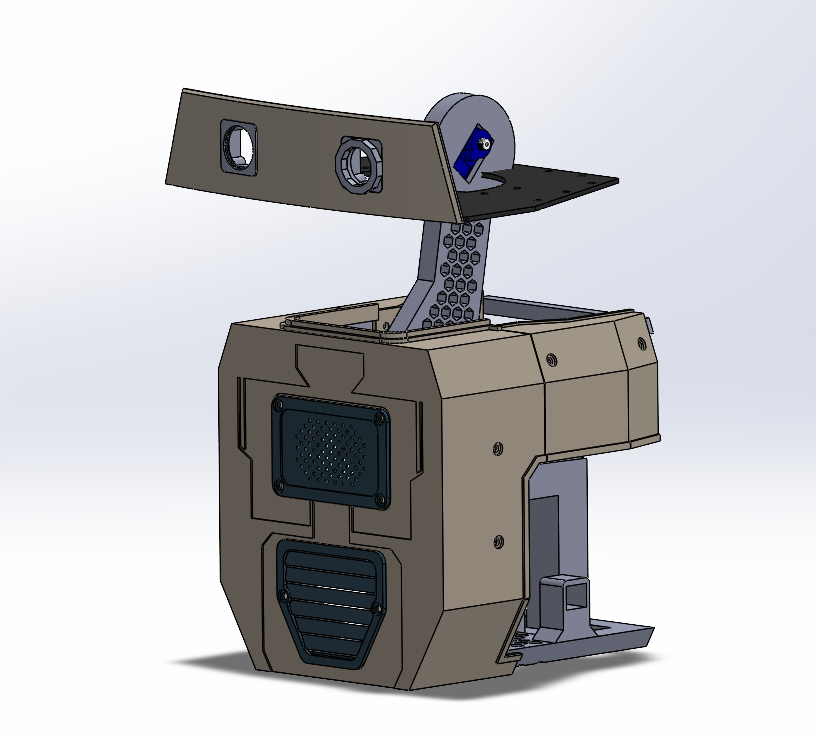

Self-Stabilizing Droid
After seeing the BDX droid on YouTube, I knew I wanted to build my own version of it. Without the budget of Disney, I had to redesign the droid from scratch to be wheeled instead of bi-pedal and scale it down to fit within my budget. This project provided me with experience in mechanical design, embedded systems, and electronics which I plan to gain even more experience in my future projects.

Mechanical Design
Description
Description

Electronics & Control
Description
Description

Assembly
Description
Description
Level 1 High-Power Rocket
A high-power level 1 rocket designed, simulated, and built to achieve a Level 1 certification. This project provided me with experience in rocket design, simulation, manufacturing, and assembly within a specific time frame. I am still in the process of testing and waiting for a launch window to fly.

Vehicle Design
To design the rocket, I used OpenRocket to simulate the materials, weight, and motor configurations to achieve the right stability, center of mass, and center of pressure. Once I had the design I wanted, I used SolidWorks to create a 3D model of the rocket to visualize the final product and create manufacturing drawings for the parts.

Manufacturing & Assembly
Most of the manufacturing I did was using a laser cutter to out the fins and the centering rings. I also used my 3D printer to print the Ogive nose cone. Then, I purchased a 3-inch body tube, a motor mount, shock cord, and a parachute. I used epoxy to assemble the fins and centering rings to the body tube, and then I assembled the rest of the rocket. I am still waiting to acquire a motor, so I am currently testing other aspects of the rocket to ensure a successful recovery.